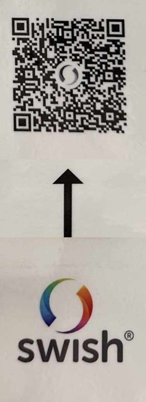

🍎 Välkommen till vår hemsida!! 🍎
🍎 Balsbygdens Föräldraförening (BFF) har till uppgift att stödja hemmen, barnomsorgen och skolan i deras strävan att ge barnen en trygg uppväxtmiljö och främja deras allsidiga utveckling. Föreningen är ideell, partipolitiskt fristående och religiöst obunden. Medlemmar är alla de hushåll som har barn på Kämpaställets förskola, Österslövs skola och Fjälkestads skola.
Kärnan i föreningen är att i nära samverkan med skola och förskola, verka för barnens bästa. Under 2022/2023 bjöd vi in till fyra föräldraföreningsmöten där vi diskuterade den nya skolan i Österslöv, inom- och utomhusmiljön, skolskjutsar, trafiksituationen vid skolorna, likabehandlingsplanen, utbildningar med mera. Under mötena informerade rektorerna för respektive verksamhet för personalförändringar och utbildningar för personalen. Föreläsningen ”Livsviktiga snack”, med Suicide Zero, anordnades.
Under verksamhetsåret 2022/2023 var föreningen nära att avvecklas. Anledningen var en kombination mellan dålig uppslutning av medlemmar vid föräldraföreningens möten under de senaste åren, samt låg återväxt till styrelsen. Under årsmötet klev flertalet nya medlemmar in i styrelsen, vilket vi är mycket glada för, då vi anser att en föräldraförening är viktig för både barn, föräldrar och skolpersonal. I dagsläget består styrelsen i BFF av 12 föräldrar till barn i både förskola och skola.
Vid styrelsemötet den 6/11 beslutade vi oss för att ta ett nytt grepp kring både möten och informationsspridning. Som en led i det har vi skapat ett Instagramkonto samt en sida på Facebook. Mötena kommer framöver att ha en rörlig agenda, vara mer tematiska samt mer effektiva (tidsatta punkter). Vi kommer även att vara tydliga med vem mötet riktar sig till varje gång; är det enbart föräldrar till barn i förskola, skola eller både och. Vi hoppas att det kommer att öka närvaron och engagemanget vid våra möten.
Vi kommer att presentera styrelsen allt eftersom, så håll tillgodo.
Vill ni redan nu komma i kontakt med oss så går det bra via mail; balsbygdensforaldraforening@gmail.com eller via telefon till
Sofie Appring, ordförande 0733926857 👋
Scanna gärna QR-koden för att enkelt kunna swisha den frivilliga medlemsavgiften om 100kr/familj och år.
